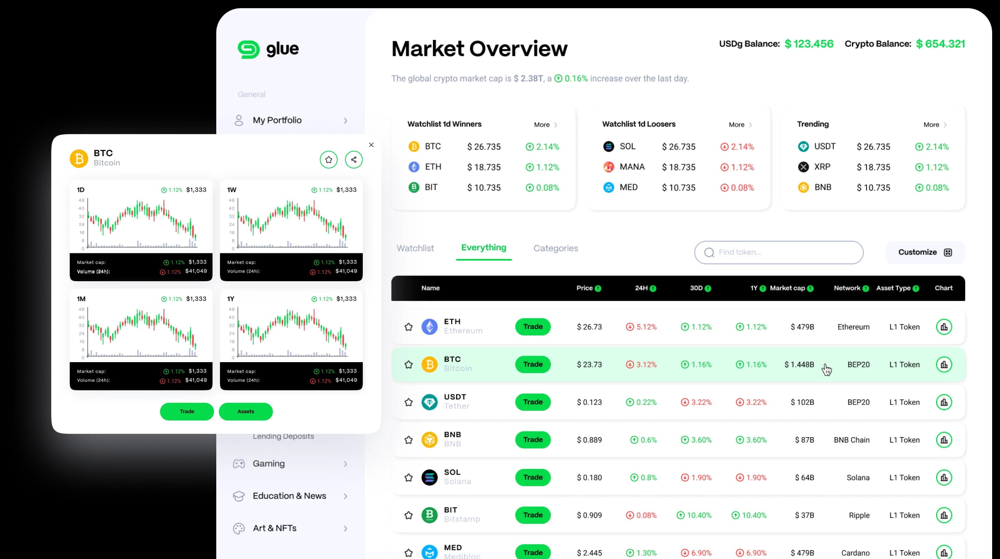
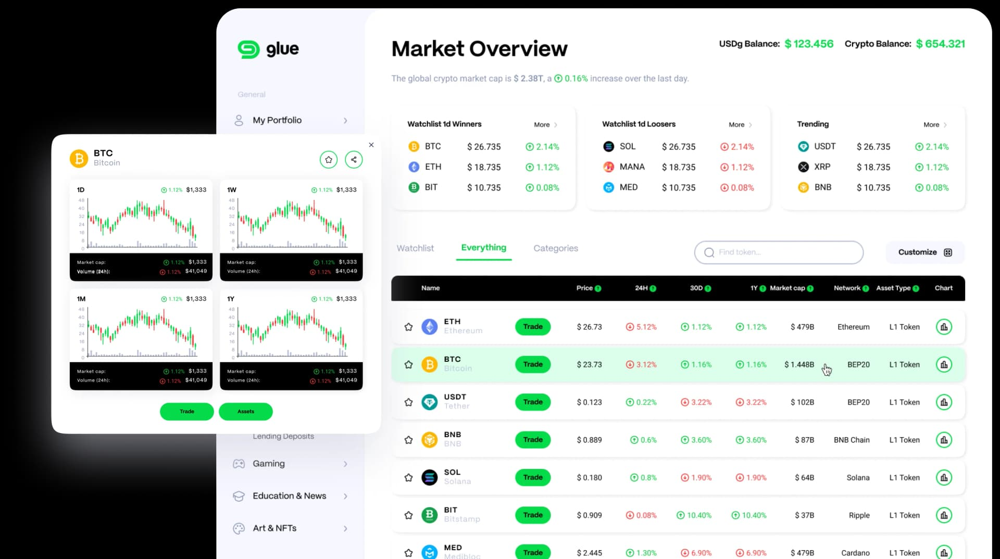

Glue:
Layer 1 + 2 and DeFi Hub
A consumer-friendly on-chain hub that brings trading, service-provider integrations and a layered blockchain stack together under one simplified product experience.
Stack
React, Polkadot, Cross-Chain Integration
Role
Product & Ecosystem Delivery
Scope
Hub UX, DeFi Experience, Wallet Flows, Cross-Chain Layer

The Mission
“To make the on-chain experience feel as approachable as centralised exchanges while preserving the flexibility and openness of DeFi.”
Core Objectives
- Unified hub abstracting protocol and chain complexity from end users
- Consumer-grade wallet onboarding and asset-management flows
- Cross-chain implementations connecting a layered L1/L2 stack
- Service-layer UX covering support, insurance and auxiliary integrations
The Challenge
DeFi is fragmented across protocols, interfaces and chains — new users are overwhelmed by wallet setup, routing, asset movement and app choice. Most blockchain products ignore service-layer needs such as support, insurance and account assistance. Consumer-facing simplicity must coexist with serious on-chain infrastructure underneath.
The product had to abstract protocol complexity without hiding critical information. Hub UX needed to support multiple services and dApp interactions within one coherent interface, with security and trust messaging central to adoption. The product vision spanned both infrastructure and consumer application layers simultaneously.
What We Built
Hub & DeFi Product Experience
End-to-end delivery of the Glue Hub — a unified interface for core on-chain actions, trading and ecosystem discovery, designed to match the fluency of centralised exchange UX.
Wallet Onboarding & Asset Management
Opinionated wallet onboarding flows and asset-management screens that reduce friction for new on-chain users without sacrificing transparency or control.
Cross-Chain Integration Layer
Cross-chain implementations and integration patterns connecting Glue’s layered blockchain ecosystem — enabling seamless asset movement and protocol interoperability across the stack.
Service-Layer Product Design
UX architecture for support, insurance and auxiliary service integrations — bringing service-provider workflows into the hub without fragmenting the product experience.
Technical Architecture
A unified hub architecture built over a Polkadot-based L1/L2 stack, with cross-chain integration patterns handling asset routing and protocol interoperability. The design system prioritises consumer clarity at every layer while exposing the full power of the underlying infrastructure to advanced users.
Real Impact.
Axiom Chain owned the bulk of Glue’s product and ecosystem delivery — covering the Hub, the DeFi experience, the integration layer across the ecosystem, and the cross-chain implementations — demonstrating that consumer-grade UX and serious on-chain infrastructure can coexist.
- Scope Areas Delivered
- 6
- Blockchain Stack
- L1+L2
- Flagship Product
- Hub
- Integration Layer
- Cross-Chain
- Region
- Global
